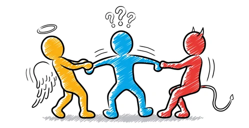

You have selfishly increased your grades and betrayed all your classmates.
The teacher has decided to give a perfect grade to you and your classmates because of your utilitarian decision.
Time out! Due to your lack of choice you and you together
with your classmates will loose this grade.
Next situation ->

You are a student in a classroom and the teacher makes an activity in which the grades of all your 20 classmates depend on you and only the teacher and you know that.
¿What do you chose?
Give yourself a perfect grade: your average grade will increase significantly at the expense of your classmates. Nobody will notice it, notwithstanding the result of your actions will be permanently recorded in your memory.
Give your classmates perfect grades in spite of decreasing your own average. At the end your memory will be unpolluted and your teacher will be proud of your moral and utilitarian thinking.
For selecting an answer doubleclick your election. When you see the results press "Next situation"